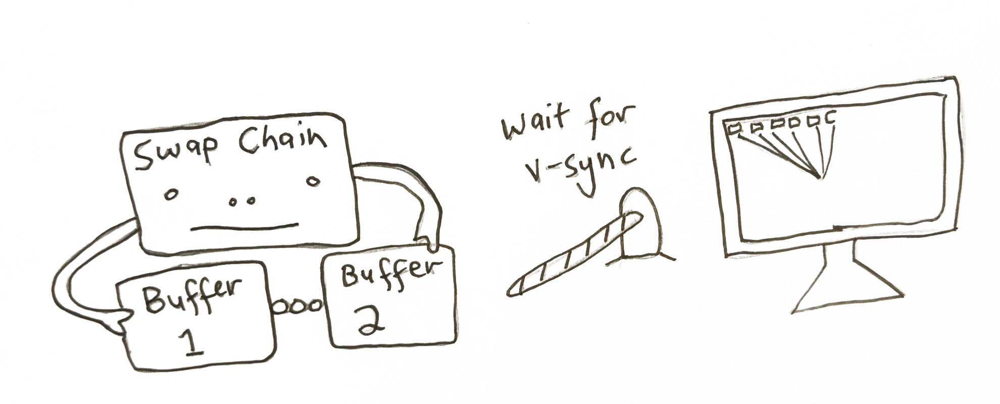
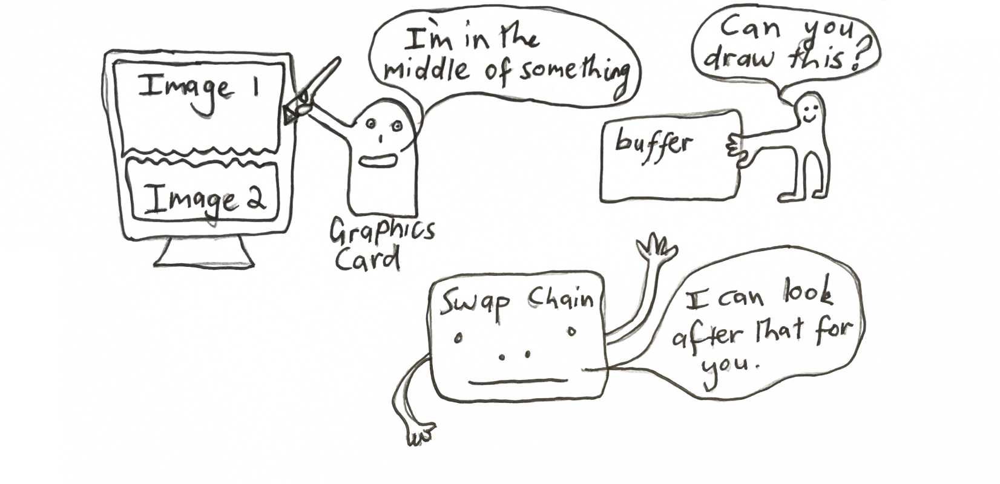
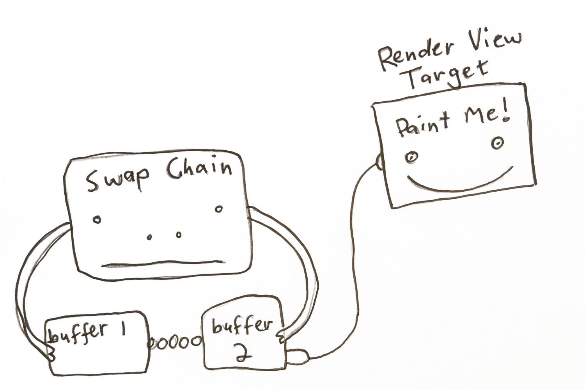
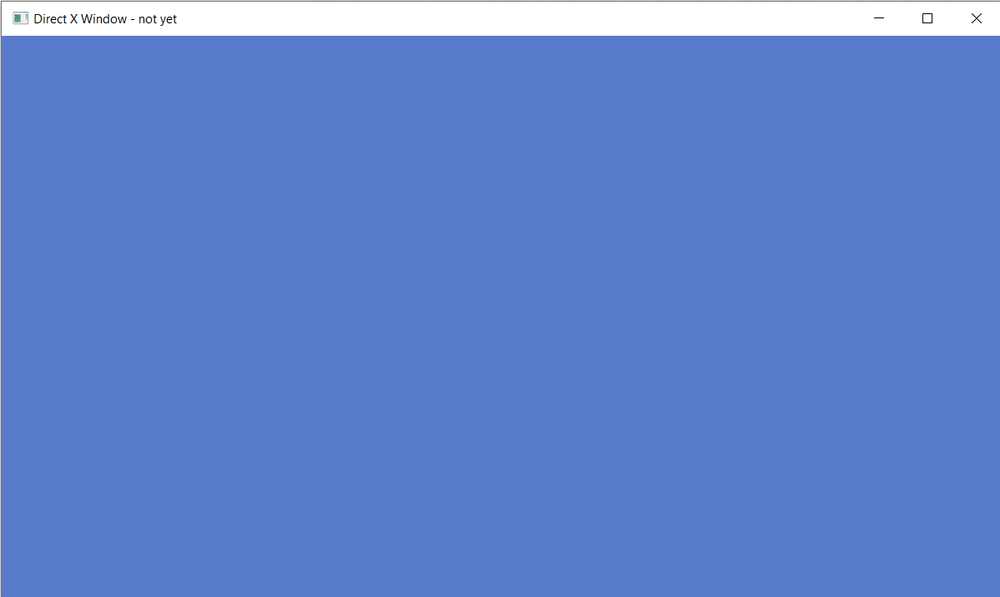

Direct3d 11 for games: Part 2
Creating a D3D Device and Device Context
Ok next we’re actually going to jump into using Direct3D. We're going to create four things - A d3d Device, d3d Device Context, a Swap Chain and a RenderViewTarget. These are the backbone of using direct3d, so let's do it!
Contents
Add the d3d header file
Create d3d Device and Device Context
Getting newer version of the Device and Device Context
Linking with d3d11.lib
Activate the Debug Layer
The Swap Chain
Find the dxgiDevice
Create our SwapChain
Create a Render View Target
Using Direct3D in our game loop
Present Our Frame
Conclusion
Quiz
Notes
Add the d3d header file
First we need to include the direct3D header file at the top of our main.cpp file. It has underscore 1 as it's an updated version - 11.1 - that has more functionality.
Create d3d Device and Device Context
First we’re going to create two things — a d3d11device and a d3d11DeviceContext. When we create a device, we’re specifying what type of d3d features we want (just d3d11, or d3d9 and d3d10 aswell?), whether we want software or hardware (using the GPU) rendering? And what type of pixel format do we want to support?

The device is in charge of creating resources (like shaders, frame buffers, and vertex buffers)and talking to the video adapter. You only want to create one device per program.
A device context on the other hand contains the circumstances or setting in which the device is used. It’s specifically used to generate render commands using the resources owned by the device. We use the d3ddevice to create resources like shaders, vertex buffers, textures & framebuffers. And we use the device context to set the render states like setViewport, setShader, setVertexBuffers and submit draw calls — the context in which we are using our resources.
To create these two things we use function D3D11CreateDevice, passing in a pointer to a ID3D11Device and a pointer to ID3D11DeviceContext to be filled out. It looks like this:
ID3D11Device1* d3d11Device;
ID3D11DeviceContext1* d3d11DeviceContext;
{
ID3D11Device* baseDevice;
ID3D11DeviceContext* baseDeviceContext;
D3D_FEATURE_LEVEL featureLevels[] = { D3D_FEATURE_LEVEL_11_0 }; //we just want d3d 11 features, not below (like version 9 or 10)
UINT creationFlags = D3D11_CREATE_DEVICE_BGRA_SUPPORT;
#if defined(DEBUG_BUILD)
creationFlags |= D3D11_CREATE_DEVICE_DEBUG;
#endif
HRESULT hResult = D3D11CreateDevice(0, D3D_DRIVER_TYPE_HARDWARE, //hardware rendering instead of software rendering
0, creationFlags,
featureLevels, ARRAYSIZE(featureLevels),
D3D11_SDK_VERSION, &baseDevice,
0, &baseDeviceContext);
//NOTE: Check if we created the device, if not notify the user with a message box
if(FAILED(hResult)){
MessageBoxA(0, "D3D11CreateDevice() failed", "Fatal Error", MB_OK);
return GetLastError();
}
You can see more about this funciton here 👆
We want Direct11 features, hardware rendering, a device with BGRA support and in a debug build we want to create a debug device to find errors in our program.
Getting newer version of the Device and Device Context
There’s one more catch here. There are newer versions of ID3D11DeviceContext and ID3D11DeviceContext aptly called ID3D11Device1 and ID3D11DeviceContext1 which have more functionality. Since we would rather have these, we query the device we just created to get a newer one. It looks like this:
ID3D11DeviceContext1* d3d11DeviceContext;
// Get 1.1 interface of D3D11 Device and Context
hResult = baseDevice->QueryInterface(__uuidof(ID3D11Device1), (void**)&d3d11Device);
assert(SUCCEEDED(hResult));
baseDevice->Release();
hResult = baseDeviceContext->QueryInterface(__uuidof(ID3D11DeviceContext1), (void**)&d3d11DeviceContext);
assert(SUCCEEDED(hResult));
baseDeviceContext->Release();
We use QueryInterface to get the type of ID3D11Device1 from our device. And the same on our deviceContext. We then release the original device and device context.
Linking with d3d11.lib
Awesome! We're now creating a Direct3D device and device context. Now we can check if this compiles. We’re going to link to d3d11.lib for it to work.
Our command line build script would now look like this:
Also make sure you include assert at the top of main.cpp
Activate the Debug Layer
Great! Next we’re going to activate the debug layer in our deviceContext. You saw when we made the deviceContext, we asked for a debug compatible context with the flag D3D11_CREATE_DEVICE_DEBUG. To enable break on d3d errors we again query the deviceContext.
// Set up debug layer to break on D3D11 errors
ID3D11Debug *d3dDebug = nullptr;
d3d11Device->QueryInterface(__uuidof(ID3D11Debug), (void**)&d3dDebug);
if (d3dDebug)
{
//NOTE: Get the info queue object
ID3D11InfoQueue *d3dInfoQueue = nullptr;
if (SUCCEEDED(d3dDebug->QueryInterface(__uuidof(ID3D11InfoQueue), (void**)&d3dInfoQueue)))
{
d3dInfoQueue->SetBreakOnSeverity(D3D11_MESSAGE_SEVERITY_CORRUPTION, true);
d3dInfoQueue->SetBreakOnSeverity(D3D11_MESSAGE_SEVERITY_ERROR, true);
d3dInfoQueue->Release();
}
d3dDebug->Release();
}
#endif
We get the ID3D11Debug object from our device using QueryInterface. Once we’ve got that, we can get the d3dInfoQueue from it. We then use the SetBreakOnSeverity function to say what errors we want to break on.
You can see other options to set in this link. 👆
The Swap Chain

The next step is to create a SwapChain. This is a collection of buffers that are used for displaying frames to the user. We render to one of these buffers in the swap chain while one is drawn to the screen. More than one buffer is used to avoid tearing. This happens when we try render to the same buffer while it’s being drawn to the monitor, resulting in an old image on the upper half of the screen, with the new image on the lower one.
Instead we have 2 or more buffers that we can ping-pong between. We draw to one (named the backbuffer), while the other is being displayed to the user.

Find the dxgiDevice
To create the SwapChain we first need to get the DXGI Factory which is used for generating objects that handle fullscreen transitions (namely the swapchain). It’s another case of using QueryInterface and other helper functions to drill down and get the final object we need. It was created when we created our device and device context, we just need to find it. It looks like this:
IDXGIFactory2* dxgiFactory;
{
// First, retrieve the underlying DXGI Device from the D3D Device
IDXGIDevice1* dxgiDevice;
HRESULT hResult = d3d11Device->QueryInterface(__uuidof(IDXGIDevice1), (void**)&dxgiDevice);
assert(SUCCEEDED(hResult));
// Identify the physical adapter (GPU or card) this device is running on.
IDXGIAdapter* dxgiAdapter;
hResult = dxgiDevice->GetAdapter(&dxgiAdapter);
assert(SUCCEEDED(hResult));
dxgiDevice->Release();
DXGI_ADAPTER_DESC adapterDesc;
dxgiAdapter->GetDesc(&adapterDesc);
//the graphics card that is being used by this progam
OutputDebugStringA("Graphics Device: ");
OutputDebugStringW(adapterDesc.Description);
// And obtain the factory object that created it. This is what we need to create our SwapChain
hResult = dxgiAdapter->GetParent(__uuidof(IDXGIFactory2), (void**)&dxgiFactory);
assert(SUCCEEDED(hResult));
dxgiAdapter->Release();
}
We get the dxgiDevice from our d3d11Device. Then we call GetAdapter we gives us back the video adapter (IDXGIAdapter) direct3d is using — this represents your graphics card. We can see specifically what it is, using the GetDesc function on it as seen above-in my case it’s using the integrated graphics card.
The parent of the adpater is the dxgiFactory that was created when we create our d3d11Device. Phew! We’ve got our dxgiFactory that is in charge of creating the SwapChain[1]. So now let’s create it!
Create our SwapChain
Now we will create our SwapChain. We use the function CreateSwapChainForHwnd. We also need to create the description of the buffer we want to create. What pixel format it will be in (we want 8bits per color B8G8R8A8 also want the output to be SRGB - that is each pixel will be mapped into SRGB space when it's drawn to the buffer). The width and height of it. Whether it is a multi-sample buffer. How many buffers we want in our swapchain (we want at least 2 to avoid tearing). How we want our back buffer to respond when the window is a different aspect-ratio and size.
This is what that looks like:
d3d11SwapChainDesc.Width = 0; // use window width
d3d11SwapChainDesc.Height = 0; // use window height
d3d11SwapChainDesc.Format = DXGI_FORMAT_B8G8R8A8_UNORM_SRGB;
d3d11SwapChainDesc.SampleDesc.Count = 1;
d3d11SwapChainDesc.SampleDesc.Quality = 0;
d3d11SwapChainDesc.BufferUsage = DXGI_USAGE_RENDER_TARGET_OUTPUT;
d3d11SwapChainDesc.BufferCount = 2;
d3d11SwapChainDesc.Scaling = DXGI_SCALING_STRETCH;
d3d11SwapChainDesc.SwapEffect = DXGI_SWAP_EFFECT_DISCARD;
d3d11SwapChainDesc.AlphaMode = DXGI_ALPHA_MODE_UNSPECIFIED;
d3d11SwapChainDesc.Flags = 0;
Since these are the buffers that we are drawing to, we set the BufferUsage to DXGI_USAGE_RENDER_TARGET_OUTPUT. Since we aren’t reading from the buffer, we don’t care about the alphaMode. We also must choose an option for how the buffer is presented to the screen in the SwapEffect variable. Since we are rendering the complete scene from scratch into the buffer each frame, we don’t need to rely on past rendering to still exist in the buffer. Because of this we use the swap effect DXGI_SWAP_EFFECT_DISCARD, instead of the DXGI_SWAP_EFFECT_SEQUENTIAL [2].
Now that we’ve got our SwapChainDescription, we are ready to create it using CreateSwapChainForHwnd, passing in our device, our description and our windowHandle:
//NOTE: Make sure we made the swap chain
assert(SUCCEEDED(hResult));
//NOTE: Don't need the dxgiFactory anymore
dxgiFactory->Release();
We also release our pointer to the dxgiFactory since we no longer need it.
Create a Render View Target

Ok, we’ve got our d3d11Device, our d3d11DeviceContext and our SwapChain. With these three things we are nearly ready to render to our window.
The very last thing we need to do is to get access to the backbuffer in our SwapChain to draw to. You can think about this as the interface we use to render to the buffer. This is represented as a ID3D11RenderTargetView.
To get this from the backbuffer in our SwapChain we do the following:
ID3D11RenderTargetView* d3d11FrameBufferView;
{
ID3D11Texture2D* d3d11FrameBuffer;
HRESULT hResult = d3d11SwapChain->GetBuffer(0, __uuidof(ID3D11Texture2D), (void**)&d3d11FrameBuffer);
//NOTE: Make sure we got the buffer from the swap chain
assert(SUCCEEDED(hResult));
//NOTE: Create the Render Target View now
hResult = d3d11Device->CreateRenderTargetView(d3d11FrameBuffer, 0, &d3d11FrameBufferView);
assert(SUCCEEDED(hResult));
//NOTE: Don't need the frame buffer object anymore
d3d11FrameBuffer->Release();
}
We use the GetBuffer function from our SwapChain, passing the buffer index as zero, since this is the only buffer we can access with the swap effect DXGI_SWAP_EFFECT_DISCARD. Once we get it, we can then create a RenderTargetView.
So we’ve got all the tools to do the rendering for us (the deviceContext and swapchain) and we’ve got the buffer we’re going to render into — the RenderTargetView of the backbuffer.
Time to get rendering!
Using Direct3D in our game loop

In our game loop, after we’ve processed our messages, we’re going to clear the renderTarget to a blue color. It looks like this:
while(running) {
//NOTE: Our message Loop
//...
//NOTE: Clear our frame buffer
FLOAT backgroundColor[4] = { 0.1f, 0.2f, 0.6f, 1.0f };
d3d11DeviceContext->ClearRenderTargetView(d3d11FrameBufferView, backgroundColor);
We’re using our d3d11DeviceContext which looks after the rendering commands to clear a render targetView — the one representing the back buffer in the SwapChain.
Present Our Frame

Then to finish the frame off we use our swapchain, calling the function present. This says we’re done all rendering for this frame, it’s time to present it to the monitor. This is the equivalent to the OpenGL command wglSwapBuffers.
The first argument is the sync interval-how were syncing with V-sync. A zero means don’t wait for v-sync, just display the image now. A value 1 to 4 means synchronize presentation after these number of vsyncs. i.e how many number of vsyncs we wait for till we can keep rendering. We want to keep up with the montior refresh rate, so we choose one. This value is the same as wglSwapIntervalEXT() with openGL. In a game you'd want the user to be able to set this to either zero (no v-sync) or one (v-sync on).
The second argument is how we want to present the frames to the output. A zero means we present a frame from each buffer starting with the current buffer — that is we’re using the sequencing ability of writing to one frame while the other one is being read, and flipping them on present.
Our game loop now looks like this:
while(running) {
//NOTE: Process our messages
MSG msg = {};
while(PeekMessageW(&msg, 0, 0, 0, PM_REMOVE))
{
if(msg.message == WM_QUIT)
running = false;
TranslateMessage(&msg);
DispatchMessageW(&msg);
}
//NOTE: Clear the buffer to color
FLOAT backgroundColor[4] = { 0.1f, 0.2f, 0.6f, 1.0f };
d3d11DeviceContext->ClearRenderTargetView(d3d11FrameBufferView, backgroundColor);
//NOTE: Present our frame to the monitor
d3d11SwapChain->Present(1, 0);
}
Conclusion
We made it. When we compile the game and run it we should hopefully get a light blue screen.

You made it through the whole Part 1 lesson. Congratulate yourself! It’s no mean feat doing computer graphics at a low level.
In Part 2 we’ll render a colorful triangle to the screen, well on the way to rendering full 3d models. See you then!
Sign up to my Newsletter to get a weekly email about what I’m up to, what I’m learning and what I’m teaching.
QUIZ
What were the four directX objects we needed to create before rendering to our Window?
[d3d11Device, d3d11DeviceContext, IDXGISwapChain, and a ID3D11RenderTargetView. At least one Device is needed to use DirectX. It’s in charge of creating resources. The DeviceContext is used to set the state in which we will use GPU. We use the DeviceContext the most during rendering our scene. The RenderTargetView represents the buffer we’re drawing into]
What function submits our final buffer to the GPU?
[swapChain->Present() function. It takes two parameters: the sync interval and how we want to display the buffers]
Why do we need at least two buffers in the swap chain?
[To stop tearing — that is we start updating the buffer that is being displayed to the screen, causing one half of the buffer to be the original image and the other half the new one we are writing to it. Instead, we ping pong between the buffers in the SwapChain]
Notes:
[1] It should be noted you can just use D3D11CreateDeviceAndSwapChain which creates both at the same time. It was separated to show more of what is happening behind the scenes.
[2] There are newer versions of these values: DXGI_SWAP_EFFECT_FLIP_DISCARD and DXGI_SWAP_EFFECT_FLIP_SEQUENTIAL which are recomended to be used. Although these are only available on Windows 10